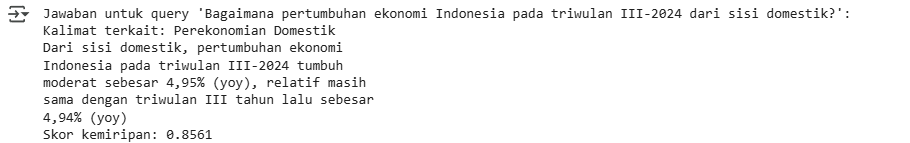
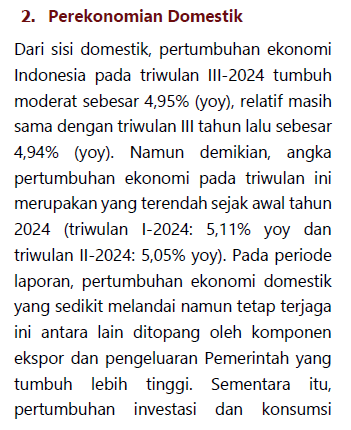
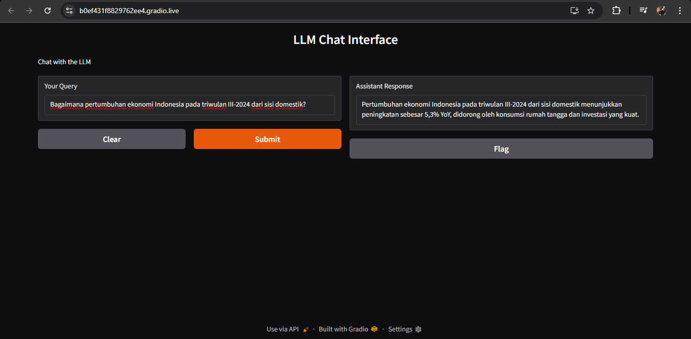
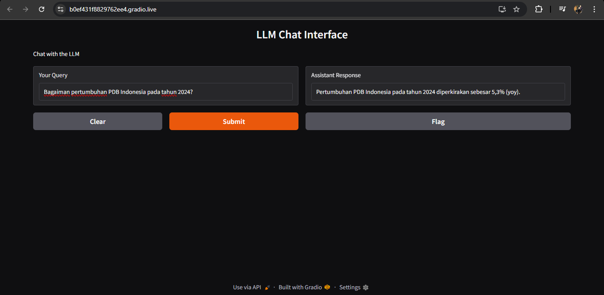
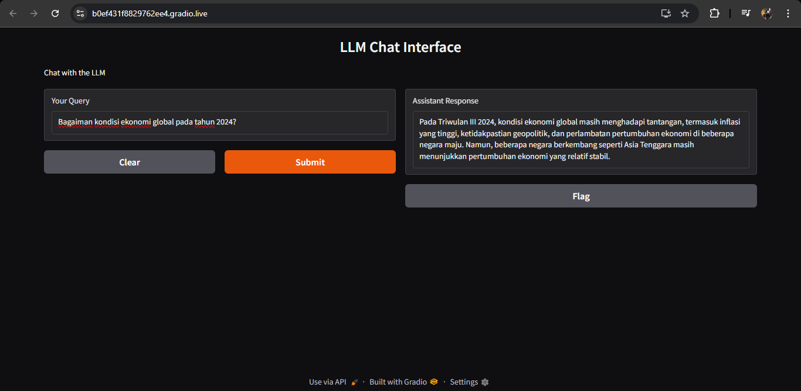
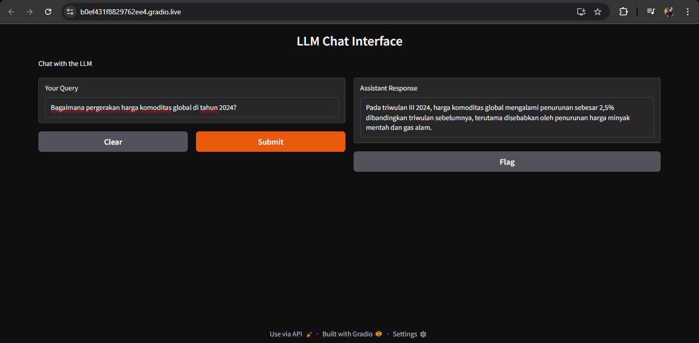

Analisis Dokumen Laporan Surveillance Perbankan Indonesia
Menggunakan Large Language Models
Analisis dokumen dilakukan dengan pendekatan Retrieval-Augmented Generation (RAG)
untuk menggali informasi penting dari Laporan Surveillance Perbankan Indonesia Triwulan III Tahun 2024.
Proses ini memanfaatkan model sentence-transformers ('all-MiniLM-L6-v2') untuk menghasilkan representasi vektor dari teks,
yang memungkinkan pencarian cepat dan efektif di dalam dokumen besar.
qdrant-client digunakan untuk melakukan pencarian berbasis vektor,
memastikan bahwa hanya bagian-bagian yang relevan dari laporan yang dapat diambil dan dianalisis.
Pendekatan ini menggabungkan kemampuan pencarian dengan generasi teks, memungkinkan analisis lebih dalam terhadap konten laporan, serta menyarankan kesimpulan atau ringkasan yang relevan untuk pengguna.
Selain itu, untuk mempermudah interaksi pengguna dengan isi laporan,
dilengkapi juga dengan chatbot berbasis model Groq.
Sebagai bagian dari sistem interaktif, chatbot yang dikembangkan menggunakan model Llama-3.2-90b-vision-preview
berfungsi untuk memberikan wawasan berbasis pertanyaan dan jawaban terkait dengan isi laporan.
Chatbot ini memungkinkan pengguna untuk mengajukan pertanyaan
terkait dengan Laporan Surveillance Perbankan Indonesia Triwulan III 2024
dan mendapatkan jawaban yang akurat dan relevan dengan cepat.
Melalui kombinasi antara analisis dokumen menggunakan RAG dan pencarian berbasis model vektor dengan sentence-transformers,
serta chatbot berbasis Llama-3.2-90b-vision-preview,
Sistem ini menawarkan solusi canggih untuk memudahkan pemahaman dan interaksi
dengan data dalam Laporan Surveillance Perbankan Indonesia Tahun 2024.
Sistem ini dapat dengan cepat menemukan bagian-bagian yang relevan
dalam dokumen dan menghasilkan ringkasan atau analisis berdasarkan informasi tersebut,
mempercepat pemahaman terhadap kondisi sektor perbankan Indonesia yang dijabarkan dalam laporan.
Analisis Dokumen menggunakan LLM
Langkah pertama dalam analisis dokumen adalah mengekstrak konten dari file PDF
Laporan Surveillance Perbankan Indonesia Triwulan III Tahun 2024.
Untuk mengekstraknya menggunakan library PyMuPDF
untuk membuka, membaca, dan mengekstrak teks dari setiap halaman PDF.
Library sentence-transformers untuk menghasilkan embedding vektor dari teks atau kalimat.
Library qdrant-client untuk menyimpan dan mengelola vektor-vektor tersebut di dalam Qdrant,
serta melakukan pencarian berbasis kemiripan.
Untuk menginstal library di lingkungan Python dapat menggunakan contoh perintah: pip install PyMuPDF.
Berikut ini cara mengekstrak kalimat-kalimat dari file PDF, kemudian menghasilkan embedding vektor untuk setiap kalimat menggunakan model dari sentence-transformers.
1. Import Libraries
Pertama mengimpor library yang diperlukan: qdrant_client untuk berinteraksi dengan Qdrant,
sentence_transformers untuk menghasilkan embedding vektor dari kalimat, dan fitz dari PyMuPDF untuk membaca file PDF.
Library ini memungkinkan kita untuk mengolah dan menyimpan vektor dari teks PDF.
2. Inisialisasi Model dan Fungsi untuk Mengekstrak Kalimat dari PDF
Menginisialisasi model SentenceTransformer dengan pre-trained model all-MiniLM-L6-v2.
Model ini digunakan untuk mengubah teks (seperti kalimat) menjadi embedding vektor
yang dapat mewakili makna semantik dari kalimat tersebut.
Setelah menginisialisasi model SentenceTransformer, selanjutnya membuat fungsi
untuk membuka file PDF, mengekstrak teks dari setiap halaman,
dan membaginya menjadi kalimat-kalimat berdasarkan tanda titik.
Kalimat-kalimat yang tidak kosong kemudian disimpan dalam daftar sentences.
Ini berfungsi untuk mengekstrak data teks dari PDF yang bisa diproses lebih lanjut.
3. Ekstrak PDF dan Generate Embeddings
Tentukan path ke file PDF yang ingin kita ekstrak kalimat-kalimatnya.
Path ini akan digunakan oleh fungsi untuk membaca file PDF Laporan Surveillance Perbankan Indonesia Triwulan III 2024.
Kemudian panggil fungsi yang sudah dibuat untuk mengambil kalimat-kalimat
yang diekstrak dari PDF tersebut dan menyimpannya dalam variabel sentences.
Setiap kalimat dalam daftar sentences diubah menjadi vektor embedding
menggunakan model SentenceTransformer.
4. Menghubungkan ke Qdrant dan Membuat Koleksi
Menghubungkan ke Qdrant, membuat koleksi baru untuk menyimpan embedding kalimat, dan memasukkan data embedding (beserta kalimat asli) ke dalam koleksi tersebut. Vektor-vektor embedding ini bisa digunakan untuk pencarian atau analisis lebih lanjut.
-
Buat objek
QdrantClientdan menghubungkannya ke Qdrant dengan menggunakan parameter:memory: -
Kemudian, buat variabel
collection_namediinisialisasi dengan nama koleksi yang ingin dibuat di Qdrant, yaitu"lspi_embeddings". Koleksi ini akan menyimpan vektor-vektor embedding yang dihasilkan dari kalimat-kalimat PDF sebelumnya. -
Buat koleksi di Qdrant dengan fungsi
recreate_collectionyang digunakan untuk membuat koleksi baru di Qdrant atau menghapus dan membuat ulang koleksi jika sudah ada. -
Kemudian menyusun data untuk dimasukkan ke Qdrant
dengan membuat daftar
pointsyang berisiPointStructuntuk setiap kalimat dalamsentencesdan embedding yang terkait. -
Terakhir, menambahkan embedding ke koleksi Qdrant dengan fungsi
upsertyang digunakan untuk menambahkan (atau memperbarui) titik (point) ke dalam koleksi di Qdrant.
5. Buat fungsi untuk mencari informasi relevan yang ada di Qdrant
Fungsi ini mengambil query dari pengguna, mengubahnya menjadi embedding vektor, lalu mencari kalimat yang paling mirip dengan query dalam koleksi Qdrant menggunakan pencarian berbasis vektor.
-
Fungsi
query_infodidefinisikan dengan dua parameter yaituqueryuntuk teks query yang dimasukkan oleh pengguna untuk mencari informasi yang relevan dalam koleksi.collection_namekoleksi di Qdrant yang akan digunakan untuk pencarian. -
query(kalimat atau pertanyaan yang dimasukkan oleh pengguna) diubah menjadi embedding vektor menggunakan modelembedding_modelyang sudah dilatih sebelumnya (model SentenceTransformer). -
Fungsi
client.searchdigunakan untuk mencari vektor yang paling mirip denganquery_embeddingdalam koleksi Qdrant. Setelah pencarian, hasil pencarian disimpan dalamsearch_result.
6. Query dari Pengguna
Berikut ini contoh query atau teks yang dimasukkan oleh pengguna sebagai pertanyaan. Pertanyaan ini akan digunakan untuk mencari informasi terkait dalam koleksi yang ada di Qdrant.
Output Query
Laporan Surveillance Perbankan Indonesia Triwulan III Tahun 2024

- Pertumbuhan Ekonomi Indonesia pada Triwulan III-2024 dari sisi domestik tercatat tumbuh moderat sebesar 4,95% (yoy), yang berarti ada peningkatan kecil sekitar 0,01% dibandingkan dengan 4,94% (yoy) pada triwulan III tahun sebelumnya.
- Skor kemiripan yang tinggi (0.8561) mengindikasikan bahwa kalimat yang ditemukan sangat relevan dan menjawab query pengguna dengan cukup baik.
- Perekonomian Indonesia relatif stabil dalam hal pertumbuhan domestik pada triwulan III-2024, dengan tingkat pertumbuhan yang hampir tidak berubah dibandingkan tahun lalu. Pencarian ini memberikan gambaran bahwa perekonomian Indonesia menunjukkan pertumbuhan yang moderat dan berkelanjutan meskipun ada fluktuasi kecil, yang mencerminkan stabilitas ekonomi dalam periode tersebut.
Chatbot dengan Groq
Untuk membuat chatbot sederhana ini diperlukan menginstal terlebih dahulu, dan juga perlu API dari Groq.
Kemudian untuk datanya diambil dari nilai atau isi variabel collection_name.
1. Autentifikasi Pengguna
Pertama mengamankan dan mengautentikasi pengguna sebelum mereka dapat mengakses layanan Groq API untuk kebutuhan analisis atau komputasi berbasis AI Autentifikasi dilakukan dengan memasukkan API key Groq secara aman. Kemudian membuat objek client untuk berkomunikasi dengan layanan Groq menggunakan kunci API yang telah dimasukkan.
Kode ini digunakan untuk menghubungkan aplikasi dengan API Groq dengan cara yang aman.
Pertama, pustaka groq dan getpass diimpor,
yang mana getpass digunakan untuk meminta API key dari pengguna tanpa menampilkan input di layar.
Setelah itu, kode meminta pengguna untuk memasukkan API key mereka, yang disimpan dalam variabel GROQ_API_KEY.
Kemudian, objek client dibuat dengan menggunakan kelas Groq,
yang mengautentikasi dan memungkinkan aplikasi berinteraksi dengan API Groq menggunakan API key yang telah dimasukkan.
Dengan kode ini dapat mempersiapkan aplikasi untuk berkomunikasi dengan layanan Groq untuk keperluan analisis berbasis AI.
2. Buat fungsi untuk mendapatkan respon dari model AI
Buat fungsi dengan nama get_response yang bekerja dengan mengirimkan
sebuah query dan konteks ke API model AI "llama-3.2-90b-vision-preview"
untuk mendapatkan jawaban atau respons berdasarkan input yang diberikan.
Model menggunakan informasi dari dua jenis pesan (sistem dan pengguna) untuk memproses pertanyaan dan memberikan jawaban yang relevan.
Fungsi get_response menerima dua argumen: query yang berisi pertanyaan atau permintaan pengguna,
dan context yang memberikan informasi latar belakang yang relevan untuk membantu model menghasilkan jawaban yang lebih baik.
Di dalam fungsi, pertama-tama dilakukan panggilan ke client.chat.completions.create,
yang mengirimkan permintaan ke model "llama-3.2-90b-vision-preview" untuk menghasilkan respon berdasarkan percakapan yang diberikan.
Setelah permintaan dikirimkan, fungsi ini mengembalikan konten dari respon yang pertama (completion.choices[0].message.content),
yang berisi jawaban yang dihasilkan oleh model untuk query yang diberikan berdasarkan konteks yang ada.
Respon yang diberikan dipengaruhi oleh parameter seperti temperature, max_tokens, dan lainnya, yang mengatur cara model menghasilkan teks.
3. Mengirimkan Pertanyaan dan Mendapatkan Respon
Berikut ini cara mengirimkan pertanyaan bersama dengan konteks ke model AI,
kemudian mengambil jawaban yang dihasilkan oleh model dan mencetaknya ke layar.
Fungsi get_response bertanggung jawab untuk mendapatkan jawaban berdasarkan konteks dan query yang diberikan.
Jawaban ini akan digunakan untuk memberikan informasi kepada pengguna.
4. Berinteraksi dengan Model AI melalui Chat dengan GUI berbasis web
Untuk membuat antarmuka grafis (GUI) berbasis web menggunakan gradio
yang memungkinkan pengguna mengajukan pertanyaan (query) ke model AI dan mendapatkan jawaban secara langsung.
Fungsi chat_interface menangani input pengguna, memanggil model AI untuk mendapatkan respons, dan menampilkan hasilnya.
Antarmuka ini diluncurkan sebagai aplikasi web interaktif yang bisa dibagikan ke orang lain melalui URL.
Chat melalui Interface


